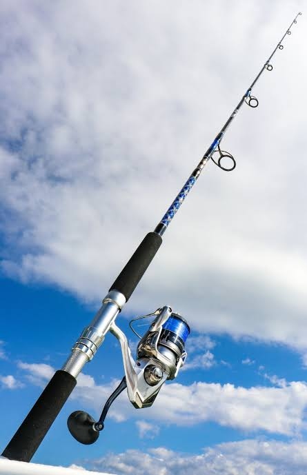
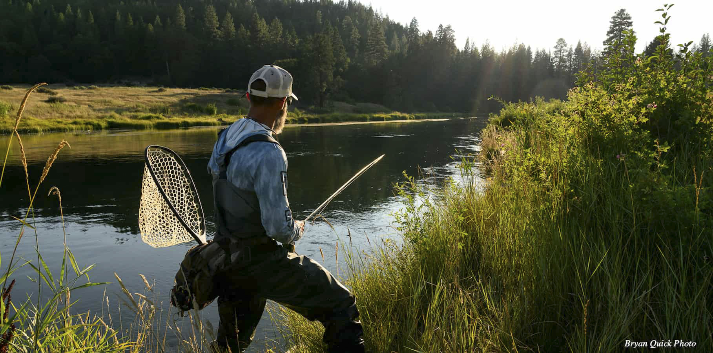
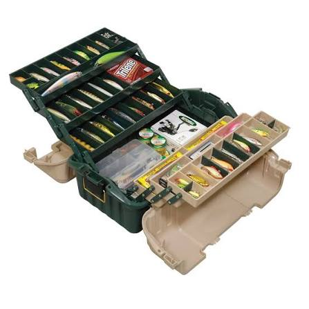
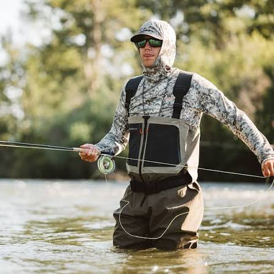

Rod & Reel
A light or ultra light spinning rod paired with a quality reel is ideal for most California trout fishing.

Having the right equipment can make your California trout fishing trip more enjoyable and successful.
Whether you are new to trout fishing or have years of experience, these basic items will help you prepare for a successful day on the water.

A light or ultra light spinning rod paired with a quality reel is ideal for most California trout fishing.

A well-stocked tackle box should include hooks, sinkers, swivels, spinners, spoon, and extra fishing line for changing conditions.

Chest waders, polarized sunglasses, and a landing net help anglers fish safely while improving comfort and success in streams and rivers.